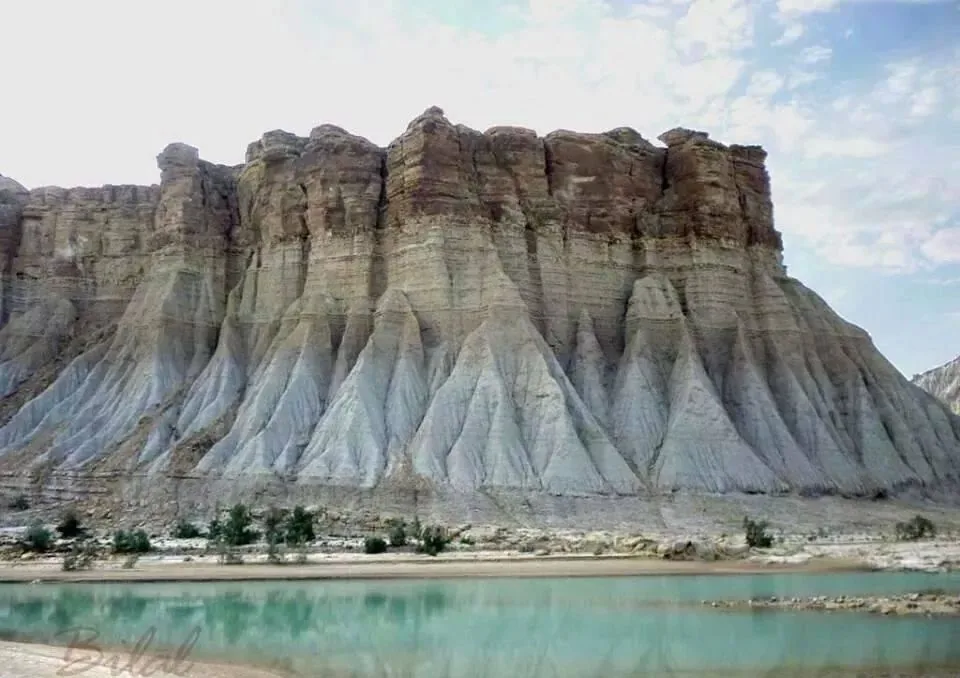

<div class="portfolio-single-load clearfix">
    <div class="custom-full-width-box">
        <div class="custom-container">
            <div class="custom-row align-items-center">
                <div class="custom-image-column">
                    
                </div>
                <div class="custom-text-column">
                    <h2 class="custom-heading">Hingol</h2>
                    <p class="custom-paragraph">
                        
                        Hingol National Park, the largest in Pakistan, showcases the raw beauty of Balochistan's natural landscape. Nestled within the Makran coastal range, the park boasts the ancient Hinglaj Mata Mandir, believed to be over 200,000 years old. Visitors are drawn to the park's unique rock formations and subtly active mud volcanoes, which add to its allure. Each year, tourists flock to Hingol to immerse themselves in its rich biodiversity and geological wonders.
                        

                    </p>
                </div>
            </div>
        </div>
    </div><!-- .custom-full-width-box end -->

</div><!-- end single-project -->
